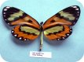
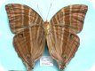
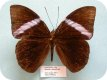
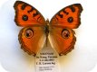
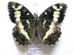
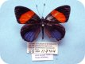
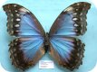
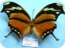

The NSG voucher specimen database has been created and is maintained by Carlos Peña.
It is based on an open source project VoSeq that was created and is being developed by Carlos Peña and Tobias Malm.
VoSeq is a database to store voucher and DNA sequence data for phylogenetic analysis. It's a unique database that enables to digitize biological data of museum specimens and molecular data such as DNA sequences, primers and genes.
VoSeq has tools that facilitate the batch upload of lots of voucher data and DNA sequences with a few clicks. It also has BLAST capabilities, meaning that you can find out whether one particular DNA sequence is most similar to other sequence NCBI GenBank. You can also BLAST your sequence against all others in your VoSeq database (see the Documentation for more details).
VoSeq is written mainly in PHP. It uses MySQL as back-end and it is designed to run in a local server (for example by installing Apache on your computer) or to run on any commercial server service.
Please send any bug complaints to Carlos Peña or Tobias Malm.VoSeq is an open source project and has been published here:
|  |  |  |  |  |  |  |  |